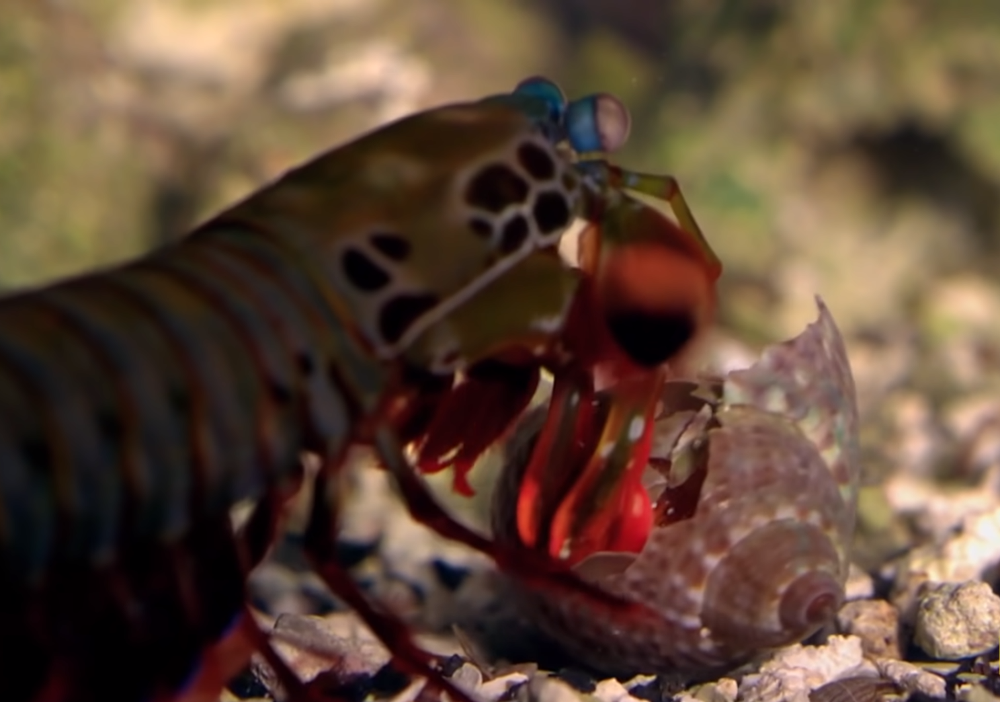

Fatos sobre o Stomatopoda
Quem ou o que é Stomatopoda?

Stomatopoda (Odontodactylus scyllarus), chamados popularmente de tamarutacas ou de lacraias-do-mar no Brasil,
é uma ordem de crustáceos marinhos da subclasse Hoplocarida, que agrupa cerca de 400 espécies,
caracterizadas principalmente pela morfologia da segunda pata torácica, que é modificada em apêndice subquelado,
lembrando uma pata de louva-a-deus.
Os estomatópodes são predadores ativos que caçam presas com o auxílio de um sentido de visão muito apurado
e capaz de interpretar polarização no espectro ultravioleta e infravermelho). Apresentam uma grande variação de tamanho,
que pode ir de poucos milímetros até aproximadamente 40 cm nas espécies maiores. Eles vivem em fundo consolidado,
lodoso ou ainda arenoso, onde cavam seus buracos ou aproveitam-se dos orifícios deixados por outros animais para neles se instalar.
São animais exclusivamente carnívoros, alimentando-se de camarões, caranguejos, moluscos, peixes e até mesmo outros da mesma ordem.
O segundo par de patas, muito desenvolvido, é usado tanto para atacar a presa como para se defender.
O urópodo, quando aberto, também funciona para defesa, como um escudo, fechando a galeria em que o animal esteja instalado.
A fêmea desova no local onde se abriga e, em caso de perigo, enrola os ovos como uma bola,
prendendo-os junto ao corpo até encontrar um abrigo mais protegido.
A visão do Stomatopoda

Esses animais possuem o mais complexo sistema de visão de cores do mundo animal, pois enxergam 12 cores primárias,
correspondentes aos 12 pigmentos distintos presentes em sua retina.
O seu poderoso soco

As maiores esmagadoras, tais como exemplares de Odontodactylus scyllarus, são capazes de desferir um dos mais rápidos e violentos golpes do reino animal,
um soco que pode apresentar a velocidade de um tiro calibre .22 (equivalente a 720 km/h) e uma pressão de impacto de 600 N/cm².